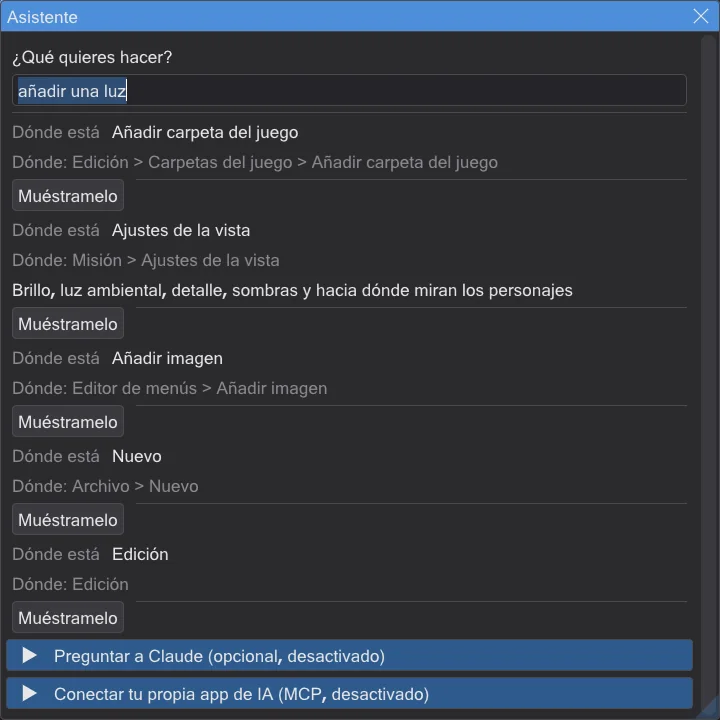
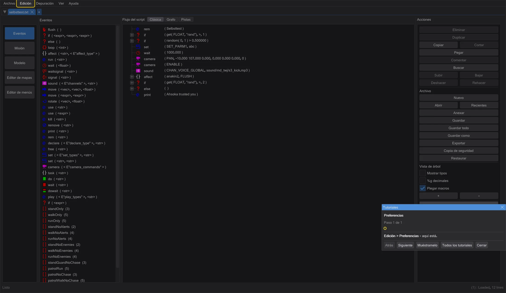
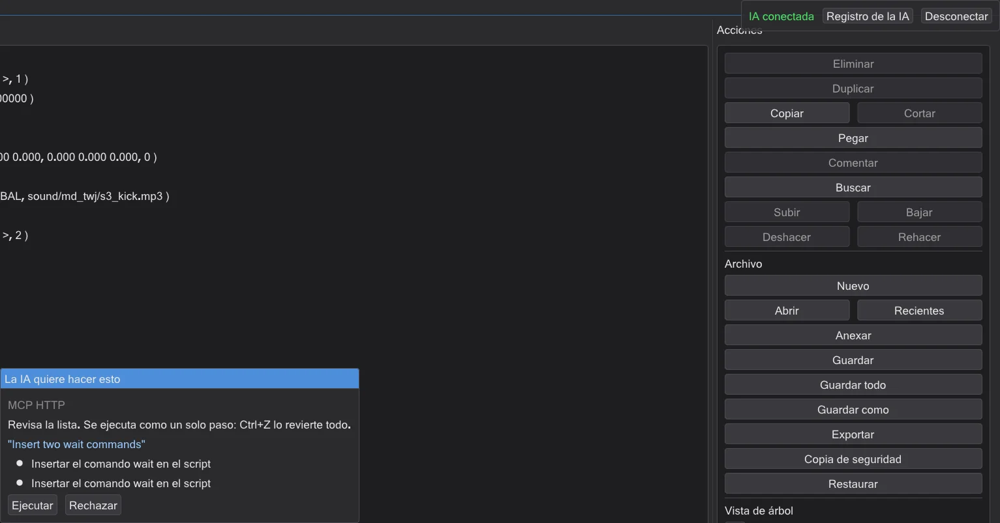
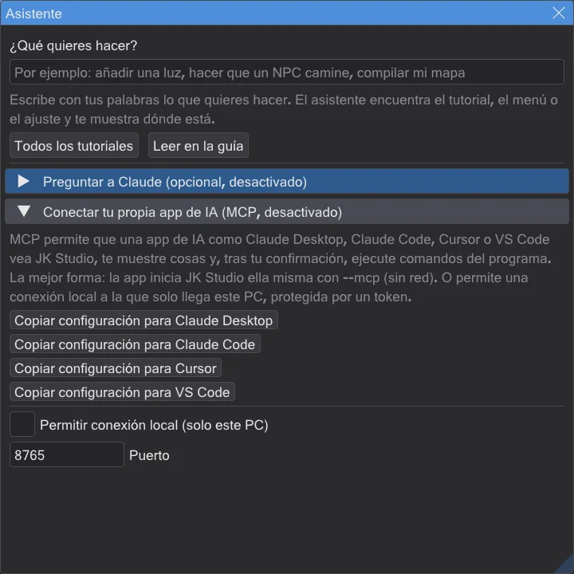

El asistente y los tutoriales
Pulsa F1, escribe lo que quieres hacer y el programa te muestra el camino. Los tutoriales interactivos esperan a tus clics reales.
El asistente: ¿qué quieres hacer?#
- 1
Pulsa F1, o Ayuda → Asistente: ¿qué quieres hacer?. En el editor de mapas F1 abre el manual como en NetRadiant; ahí usa Help → Asistente: ¿qué quieres hacer?.
- 2
Escribe con tus palabras lo que quieres hacer. Por ejemplo "añadir una luz" o "hacer que un NPC camine". Funcionan alemán, inglés, chino, japonés, español y checo.
- 3
Elige un resultado. Muéstramelo inicia el tutorial en el paso adecuado, o resalta el botón o la entrada de menú. No se cambia nada.
- 4
Leer en la guía abre la página correspondiente de esta guía.


El asistente funciona sin internet. Conoce cada paso de los tutoriales, cada página de esta guía, cada entrada de menú y cada ajuste del programa, también del editor de mapas, con los nombres de NetRadiant.
Encontrar las cosas más rápido#
- Cuenta dónde trabajas. En el editor de mapas, los resultados del editor de mapas salen primero; en el editor de menús, los del editor de menús. "Ajustes" en el editor de mapas encuentra sus propias preferencias.
- Con tus palabras, en cualquier forma. "corre", "corrió", "corriendo" o "runs", "running" encuentran lo mismo. Las erratas pequeñas no importan; si no hay ningún resultado, el asistente ofrece ¿Quisiste decir...?
- También sabe lo que hay dentro. Los botones de las barras, las páginas de las preferencias del editor de mapas, el editor de menús y lo que contiene un diálogo forman parte de la búsqueda.
- Muéstramelo, paso a paso. Si el control aún no está visible, Muéstramelo señala primero lo que lo abre; para un ajuste del programa principal buscado en el editor de mapas: primero Eventos, luego Edición → Preferencias y luego el propio campo.
Tutoriales interactivos#
- Un tutorial oscurece la pantalla salvo el control que necesitas y explica el siguiente paso en una ventana pequeña.
- Espera hasta que hayas hecho de verdad el paso (por ejemplo, hasta que esté el brush) y luego avanza solo.
- Si pasa otra cosa, te dice amablemente qué hacer en su lugar; por ejemplo "Eso era una luz: elige info_player_start".
- Puedes parar en cualquier momento; el programa recuerda hasta dónde llegaste.
- Tutoriales en el programa: los cinco tutoriales de scripts, Tu primer mapa: una sala por la que caminar (15 pasos: sala, textura, luz, inicio del jugador, compilar, recorrer, empaquetar como .pk3), Poner un plano donde estás mirando para una cinemática y Ver un modelo de personaje.
En el primer inicio el programa pregunta ¡Bienvenido! ¿Qué quieres hacer primero?: elige un objetivo, o simplemente echa un vistazo.
Preguntar a Claude (opcional)#
Si quieres, puedes conectar Claude, una IA de Anthropic. Está desactivado hasta que lo actives. Necesitas tu propia clave de API de Anthropic; las preguntas se envían entonces a Anthropic y cuestan dinero en tu cuenta.
- 1
Abre el asistente (F1) y despliega Preguntar a Claude (opcional, desactivado).
- 2
Marca Usar Claude, pega tu clave y pulsa Guardar clave. La clave se guarda cifrada en este PC.
- 3
Escribe tu pregunta en el asistente y pulsa Preguntar a Claude. Claude responde y puede iniciar un tutorial o resaltarte un control.
Claude también puede hacer cosas por ti con los comandos propios del programa, por ejemplo vaciar un brush. Siempre ves antes la lista y decides: Ejecutar o Rechazar. Un trabajo es un paso de deshacer: Ctrl+Z lo revierte todo.

Haz preguntas de seguimiento: Hacer otra pregunta conserva la conversación, así Claude sabe lo que preguntaste antes. La respuesta aparece mientras se escribe; Detener la detiene enseguida y no queda nada de esa pregunta. Conversación nueva borra la conversación de tu ordenador.
En el editor de menús Claude también puede seleccionar, mover, duplicar o eliminar elementos y cambiar a Interactuar, de nuevo solo tras Ejecutar, y todo el trabajo es un paso de deshacer. Abrir, guardar o exportar un menú no es posible para la IA.
Conectar tu propia app de IA (MCP)#
MCP (Model Context Protocol) es una forma habitual de que las apps de IA usen programas. Claude Desktop, Claude Code, Cursor y VS Code pueden ver JK Studio, mostrarte cosas y, tras tu confirmación, ejecutar comandos del programa.
- 1
En el asistente, despliega Conectar tu propia app de IA (MCP, desactivado).
- 2
Pulsa el botón de copiar de tu app. Pone en el portapapeles una configuración lista: la app inicia JK Studio ella misma con
--mcp. No necesita red y es la forma más segura. - 3
Pégala en la configuración de la app (Claude Desktop: claude_desktop_config.json, Cursor: .cursor/mcp.json, VS Code: .vscode/mcp.json; Claude Code: ejecuta el comando) y reinicia la app.

Si JK Studio ya se está ejecutando, puedes marcar en su lugar Permitir conexión local (solo este PC). Solo los programas de este PC pueden llegar a ella, y solo con el token secreto del botón de copiar. Token nuevo crea un token nuevo en cualquier momento.
¿Es seguro?#
- Desactivado por defecto. No se conecta nada hasta que lo actives tú mismo. Mientras una IA está conectada, arriba a la derecha aparece IA conectada, con Desconectar.
- La IA no puede tocar tus archivos. No tiene acceso a archivos, ni línea de comandos, ni internet a través de JK Studio. Solo puede leer lo que muestra el programa, mostrarte cosas y usar los comandos propios del programa.
- Tú decides. Cada cambio se muestra antes y solo se ejecuta tras Ejecutar. Guardar, sobrescribir y borrar archivos siempre preguntan, aunque hayas permitido cambios sin preguntar. Cada trabajo es un paso de deshacer.
- Los trucos en archivos no funcionan. El texto dentro de un mapa o de un script (por ejemplo "borra todos los archivos") se pasa a la IA como datos, nunca como orden, y además no hay ningún comando que pudiera usar para eso.
- Los sitios web no pueden llegar a ella. La conexión local solo responde a este PC, comprueba de dónde viene una petición y necesita el token secreto.
- Tu clave sigue siendo tuya. La clave de API y el token se guardan cifrados para tu usuario de Windows. La clave solo va a api.anthropic.com por una conexión cifrada, nunca a los registros.
- Puedes verlo todo. Registro de la IA lista cada acción de la IA. JK Studio no envía datos de uso a ningún sitio.
- Desactívalo: pulsa Desconectar, desmarca Usar Claude y Permitir conexión local (solo este PC), o borra la clave con Borrar clave.
- La conversación se queda en tu PC. Se guarda cifrada para tu usuario de Windows y se borra con Conversación nueva. Tras cada petición, el programa también borra la clave de su memoria.